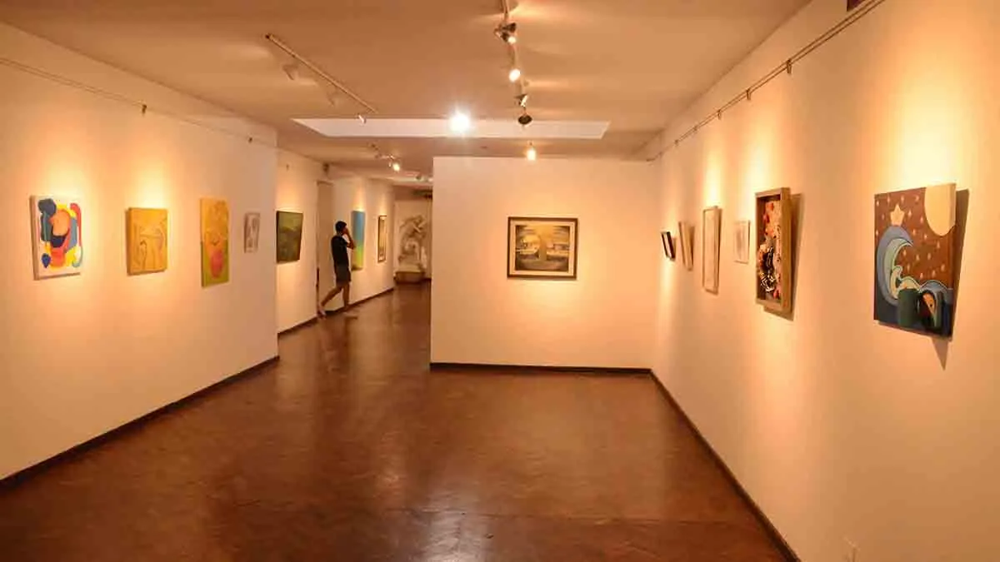

SOBRE NOSOTROS
Punto Cultural nace con la idea de acercar espacios, actividades y propuestas culturales de Río Cuarto a la comunidad. Buscamos crear un lugar donde cualquier persona pueda descubrir nuevos espacios, eventos y experiencias para disfrutar.

Promovemos el acceso libre y la difusión de actividades culturales para toda la comunidad.
Fomentamos el encuentro y la participación entre personas, artistas y espacios culturales.
Valoramos las distintas expresiones artísticas y nuevas propuestas culturales.
Trabajamos junto a instituciones, artistas y espacios para fortalecer la cultura local.